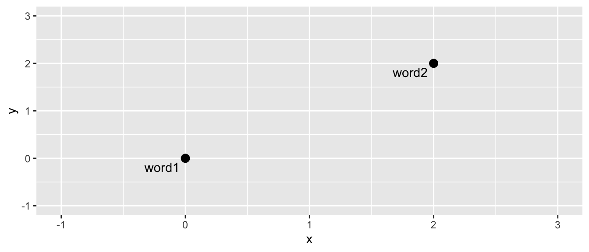
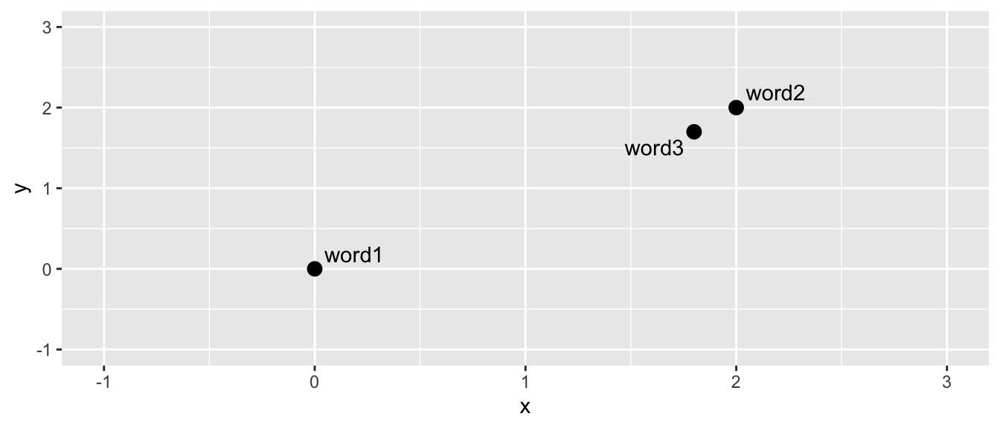

12 Word Embeddings
What are Word Embeddings?
The use of word embeddings is a valuable tool for understanding the meaning of words within texts. They can be used to understand semantic change within vocabularies - how the meaning of words changed over time. Word embeddings have been heavily used in the context of historical newspapers, for example to examine the changing biases around gender in Dutch newspapers (Wevers 2019), or to understand concepts Wevers and Koolen (2020). In a nutshell, word embeddings are a mathematical representation of words in a corpus, taking into account how that word is used and its relationship to other words. This representation can be used for further tasks, such as measuring semantic change, as a form of text search, or as the input for machine learning models, for classification for example.
The basic premise of word embeddings is to assign a mathematical value to each word in a corpus. An embedding is a ultimately a point in Euclidean space. For example, a word in two-dimensional Euclidean space might be represented by the point c(2,2). A second word might be represented by the point c(1,1). If we draw these on a graph it would look like this:
When represented on a graph like this, it’s easy to do mathematical calculations such as measuring the distance between the words. We can also easily calculate whether a word is closer to one or another. If we introduce a third word to the above:

We can easily tell (and also calculate, using a simple distance formula) that word 3 is closer to word 2 than it is to word 1.
We can also represent the words in more than two dimensions (it just becomes more difficult to draw them, but the mathematics stays the same.
Word embedding methods, then, essentially turn each word in a corpus into a vector - meaning a series of numbers representing its position in multi-dimensional space. In the example above, the words are represented by a vector of length two, such as c(1,1).
There are lots of ways of determining these word embeddings, and there is no single ‘true’ representation. A popular method is to look at the context of words and use this information as as way to determine the most appropriate vector by which each word can be represented. A model can be trained which means a set of embeddings can be developed where words which appear often in context with each other will be closer together within the multi-dimensional space of that corpus.
Imagine the above word 1 is something like cat, word 2 is a colour, say yellow, and word 3 is another colour, say red. Red and yellow are much more likely to be used in the same context (I have a red/yellow raincoat) than the word cat. The sentence I have a cat raincoat is less likely to occur in a corpus, though not impossible… This means that red and yellow are likely to be semantically similar. A good contextual word embedding model will mean they will be most likely be placed closer together in multi-dimensional space.
Word Embedding Algorithms
There are a number of algorithms available for doing this. Two popular ones are word2vec, created in 2013 by researchers at Google, and the GloVe algorithm, created at Stanford in 2014. Both of these look at the context of words, and iterate over a process which tries to maximise in some way the relationship between the vectors and the context of the words, using neural networks.
GloVe takes into account the overall word co-occurrence of the words in the data, alongside the local co-occurrence, which can be more efficient. Jay Alammar has an excellent explainer of word2vec, much of which also applies to GloVe.
Essentially, these use neural networks to learn the best set of embeddings which are as good as possible at predicting the next word in the sentences found in the data - a form of unsupervised learning.
Creating Word Embeddings with R and text2vec.
In R, we can access these algorithms through a package called text2vec. Text2vec is a package which can do a number of NLP tasks, including word vectorisation. The package has a vignette which explains how to use the GloVe algorithm. I also recommend reading this tutorial by Michael Clark, which also uses text2vec.
On a practical level, the steps to use this package to generate embeddings are the following:
Construct the input data from the full texts of the newspapers extracted in previous chapters. This involves tokenising the data, and creating a count of the appearances of words in the data.
Next, create a term co-occurrence matrix. This is a large matrix which holds information on how often words occur together. For the gloVe algorithm, we pick a ‘window’. The co-occurrence statistics count all instances of terms occurring together within this window, over the whole dataset.
Run the gloVe algorithm on this co-occurrence matrix.
Construct the vectors from the resulting output.
Load libraries
This tutorial uses libraries used previously, plus a new one called text2vec. If you haven’t installed these (or some of them), you can do so with the following:
install.packages('text2vec')
install.packages('tidyverse')
install.packages('tidytext')Once you’re done, load the packages:
#| warning: false
#| message: false
library(text2vec)
library(tidyverse)
library(tidytext)Load and create the newspaper dataset
Either construct your own corpus by following [Chapter -@sec-download] and [Chapter -@sec-extract], or download and open the ready-made .zip file with all issues from 1855. Next, get these articles into the correct format. See [Chapter -@sec-count] for an explanation of this code:
news_sample_dataframe = list.files(path = "newspaper_text/",
pattern = "csv",
recursive = TRUE,
full.names = TRUE)
all_files = lapply(news_sample_dataframe, data.table::fread)
names(all_files) = news_sample_dataframe
all_files_df = data.table::rbindlist(all_files, idcol = 'filename')
title_names_df = tibble(newspaper_id = c('0002090', '0002194', '0002244', '0002642', '0002645', '0003089', '0002977'), newspaper_title = c('The Liverpool Standard And General Commercial Advertiser', 'The Sun', 'Colored News', 'The Express', 'The Press', 'Glasgow Courier', 'Swansea and Glamorgan Herald'))
news_df = all_files_df %>%
mutate(filename = basename(filename))
news_df = news_df %>%
separate(filename,
into = c('newspaper_id', 'date'), sep = "_") %>% # separate the filename into two columns
mutate(date = str_remove(date, "\\.csv")) %>% # remove .csv from the new data column
select(newspaper_id, date, art, text) %>%
mutate(date = ymd(date)) %>% # turn the date column into date format
mutate(article_code = 1:n()) %>% # give every article a unique code
select(article_code, everything()) %>% # select all columns but with the article code first
left_join(title_names_df, by = 'newspaper_id') # join the titles Create the correct input data
The first step is to create the vocabulary which will be used to later construct the term co-occurrence matrix.
First, use unnest_tokens() (see the previous chapter) to get a list of the tokens within the data. Store the tokens column (called word) as a list:
news_tokens = news_df %>%
unnest_tokens(output = word, input = text )
news_words_ls = list(news_tokens$word)Next, create the ‘iterator’ using a function from the text2vec package, itoken(). An iterator is an object which will tell our function how to move through the list of words.
it = itoken(news_words_ls, progressbar = FALSE)Create the vocabulary list by passing the iterator to the function create_vocabulary(). Furthermore, use prune_vocabulary() to remove very infrequent words, which won’t contain much information and in many cases may be OCR artefacts. You can experiment with this value, depending on the size of your dataset.
news_vocab = create_vocabulary(it)
news_vocab = prune_vocabulary(news_vocab, term_count_min = 10)Construct the term co-occurrence matrix. To begin with, create a vectorizer using the function vocab_vectorizer(). As with iterator above, this creates an object whose job is to describe how to do something - in this case, how to map words in the correct way for the term co-occurrence matrix.
Using this, use the function create_tcm() to create the term co-occurrence matrix, using the iterator and the vectorizer created above. Specify the skip_grams_window paramter, which defines how large a context to consider when calculating the co-occurrence. The result, if you look at it, is a large sparse matrix, containing each pair of co-occurring words, and the number of times they co-occur in the data.
vectorizer = vocab_vectorizer(news_vocab)
# use window of 10 for context words
news_tcm = create_tcm(it, vectorizer, skip_grams_window = 10)Run the GloVe algorithm
Next, run the GloVe algorithm. This is done by creating an R6 class object, rather than simply running a function. This is an example of using object-orientated programming. The process is slightly different. First, create an empty object of the GlobalVectors class using GlobalVectors$new() . Next, run the neural network using glove$fit_transform, specifying how many iterations and threads (processors) it should use. This will take some time to run.
glove = GlobalVectors$new(rank = 50, x_max = 10)
wv_main = glove$fit_transform(news_tcm, n_iter = 10, convergence_tol = 0.01, n_threads = 5)INFO [23:39:18.851] epoch 1, loss 0.1578
INFO [23:40:58.863] epoch 2, loss 0.1247
INFO [23:42:36.180] epoch 3, loss 0.1149
INFO [23:44:13.058] epoch 4, loss 0.1100
INFO [23:45:50.340] epoch 5, loss 0.1068
INFO [23:47:29.186] epoch 6, loss 0.1046
INFO [23:49:06.166] epoch 7, loss 0.1029
INFO [23:50:43.553] epoch 8, loss 0.1016
INFO [23:52:21.512] epoch 9, loss 0.1006
INFO [23:53:58.400] epoch 10, loss 0.0997
INFO [23:53:58.400] Success: early stopping. Improvement at iterartion 10 is less then convergence_tolOn the advice from the package vignette, the following takes the average of the main and context vectors, which usually produces higher-quality embeddings.
news_wv_context = glove$components
news_word_vectors = wv_main + t(news_wv_context)With this, using the following we can extract the embeddings for a single word, and find its cosine similarity to all other words in the data, using the function sim2
king = news_word_vectors["king", , drop = FALSE]
cos_sim = sim2(x = news_word_vectors, y = king, method = "cosine", norm = "l2")
head(sort(cos_sim[,1], decreasing = TRUE), 10) king queen napoleon emperor prince sardinia nicholas louis
1.0000000 0.8052699 0.7320730 0.7315985 0.7155519 0.6968580 0.6916976 0.6838280
brother majesty
0.6764432 0.6583422 Limitations of Word Embeddings
As a warning, word embeddings are going to be very closely related to the specific context of the corpus you are using. This can be a problem, but could also easily be exploited to find out interesting things about a particular corpus.
Newspapers, like all texts, have their own particular history and way of writing. This means in some cases we may get surprising or unexpected results. To show how this works in practice, we’ll compare the most-similar embeddings for two European cities: Paris and Madrid.
We might assume that these two would be very similar and have similar ‘interchangeable’ words. They’re both European capital cities. The words used in a similar context to a city are, generally, other cities. Newspapers tend to talk about cities in a very similar way, after all. In terms of the news, one city is to a certain extent interchangeable with any other.
To test this, let’s extract the vectors for these two cities, using a similar method to above. First, Madrid:
madrid = news_word_vectors["madrid", , drop = FALSE]
cos_sim = sim2(x = news_word_vectors, y = madrid, method = "cosine", norm = "l2")
head(sort(cos_sim[,1], decreasing = TRUE), 20) madrid trieste cadiz petersburg hamburg marseilles portugal
1.0000000 0.7869637 0.7833618 0.7717108 0.7388098 0.7383232 0.7189477
berlin lisbon spain advices brings dates barcelona
0.6888056 0.6668587 0.6667396 0.6663199 0.6654678 0.6648136 0.6607090
vienna states naples despatches dated announces
0.6579046 0.6491745 0.6418002 0.6340907 0.6270235 0.6219410 As expected, the most-similar words are other cities, Trieste, Cadiz, and so forth. Semantically, one city is sort of interchangeable for any other. Now let’s look at Paris:
paris = news_word_vectors["paris", , drop = FALSE]
cos_sim = sim2(x = news_word_vectors, y = paris, method = "cosine", norm = "l2")
head(sort(cos_sim[,1], decreasing = TRUE), 20) paris berlin vienna says petersburg
1.0000000 0.7472533 0.7192674 0.7006142 0.6913755
letters states news visit gazette
0.6702156 0.6595984 0.6533694 0.6511282 0.6439287
emperor hamburg france rome received
0.6418173 0.6403322 0.6387930 0.6299702 0.6273762
england french london correspondent de
0.6216291 0.6163040 0.6150638 0.6132741 0.6120777 The result is a list which is much more mixed, semanttically. In this list there are a few cities (Vienna, Rome, London), but there are also words relating to the transmission of news (News, says, gazette, despatch, daily…).
This suggests that Paris is not just an interchangeable city from where news is reported, but has perhaps a more important role, as a key relay place from where news is being sent. News is not just reported from Paris, but it is a place where news is gathered from across Europe to be sent onwards across the Channel. This is reflected in the contextual word embeddings.
Case study - semantic shifts in the word ‘liberal’ over time in The Sun Newspaper
As a final case study demonstrating how word embeddings might be used, we’ll look at how a particular concept shifts in a single newspaper over time. By looking at the most-similar words to a target word, in this case ‘liberal’, we can capture changes in the dominant meaning of the word. In Chapter 10, we did a bigram analysis (Section 10.7), which pointed to a change in the way the word liberal was used between 1802 and 1870.
To do so, we’ll use another dataset, this time, all issues of The Sun newspaper from two years: 1802 (the first full year in the repository data) and 1870 (the last full year). We’ll follow the same workflow as above, except create two entirely different set of word vectors for each time period. We can then look at the most similar words in each and make some conclusions. We can also compare the similarity of two words in each time period.
You can do this with any selection of newspapers from any dates. Here, I have already provided the full-text files for the two years of The Sun. If you want to use other titles or years, follow the steps outlined in chapters x and y.
Particularly because we are looking at a single title, and, therefore, we might expect it to be more consistent in its editorial and writing practices, looking at shifts might tell us something about how the concept or word use of the word liberal was treated differently in the press over time.
At the same time, there may be many other hidden reasons for the change in the word. Perhaps it is used in a popular advertisement which ran at one time and not another? You should attempt to understand, for example through close reading or secondary sources, why the semantics of a word might look as they do. And of course, this may not reflect anything deeper about how the concept or ideology changed over time. But understanding how a word was represented in a title and how that changed might be a starting-point for further analysis.
As before, we will load in the files, create the token list, and the word embeddings using GloVe. The steps here are exactly as above, just repeated for each year in the data.
theSun = list.files(path = "../../../Downloads/TheSun_sample/",
pattern = "csv",
recursive = TRUE,
full.names = TRUE)theSunall_files = lapply(theSun, data.table::fread)
names(theSunall_files) = theSun
theSunall_files_df = data.table::rbindlist(theSunall_files, idcol = 'filename')
theSunall_files_df = theSunall_files_df %>%
mutate(filename = basename(filename))
theSunall_files_df = theSunall_files_df %>%
separate(filename,
into = c('newspaper_id', 'date'), sep = "_") %>% # separate the filename into two columns
mutate(date = str_remove(date, "\\.csv")) %>% # remove .csv from the new data column
select(newspaper_id, date, art, text) %>%
mutate(date = ymd(date)) %>% # turn the date column into date format
mutate(article_code = 1:n()) %>% # give every article a unique code
select(article_code, everything()) %>%
left_join(title_names_df, by = 'newspaper_id')# select all columns but with the article code first theSunTokens = theSunall_files_df %>%
unnest_tokens(word, text, token = 'words')tokens_1802 = theSunTokens %>%
mutate(year = year(date)) %>%
filter(year == 1802)
words_ls_1802 = list(tokens_1802$word)
it_1802 = itoken(words_ls_1802, progressbar = FALSE)
vocab_1802 = create_vocabulary(it_1802)
vocab_1802 = prune_vocabulary(vocab_1802, term_count_min = 10)tokens_1870 = theSunTokens %>% mutate(year = year(date)) %>%
filter(year == 1870)
words_ls_1870 = list(tokens_1870$word)
it_1870 = itoken(words_ls_1870, progressbar = FALSE)
vocab_1870 = create_vocabulary(it_1870)
vocab_1870 = prune_vocabulary(vocab_1870, term_count_min = 10)vectorizer_1802 = vocab_vectorizer(vocab_1802)
# use window of 10 for context words
tcm_1802 = create_tcm(it_1802, vectorizer_1802, skip_grams_window = 10)
vectorizer_1870 = vocab_vectorizer(vocab_1870)
# use window of 10 for context words
tcm_1870 = create_tcm(it_1870, vectorizer_1870, skip_grams_window = 10)glove1802 = GlobalVectors$new(rank = 50, x_max = 10)
wv_main_1802 = glove1802$fit_transform(tcm_1802, n_iter = 10, convergence_tol = 0.01, n_threads = 8)INFO [23:56:36.793] epoch 1, loss 0.1608
INFO [23:56:49.756] epoch 2, loss 0.1132
INFO [23:57:02.673] epoch 3, loss 0.1005
INFO [23:57:15.611] epoch 4, loss 0.0931
INFO [23:57:28.539] epoch 5, loss 0.0882
INFO [23:57:41.468] epoch 6, loss 0.0846
INFO [23:57:54.424] epoch 7, loss 0.0820
INFO [23:58:07.384] epoch 8, loss 0.0799
INFO [23:58:20.291] epoch 9, loss 0.0782
INFO [23:58:33.248] epoch 10, loss 0.0768glove1870 = GlobalVectors$new(rank = 50, x_max = 10)
wv_main_1870 = glove1870$fit_transform(tcm_1870, n_iter = 10, convergence_tol = 0.01, n_threads = 8)INFO [23:58:59.390] epoch 1, loss 0.1974
INFO [23:59:25.293] epoch 2, loss 0.1418
INFO [23:59:50.925] epoch 3, loss 0.1264
INFO [00:00:16.822] epoch 4, loss 0.1180
INFO [00:00:42.675] epoch 5, loss 0.1127
INFO [00:01:08.571] epoch 6, loss 0.1090
INFO [00:01:34.434] epoch 7, loss 0.1062
INFO [00:02:00.338] epoch 8, loss 0.1041
INFO [00:02:26.170] epoch 9, loss 0.1024
INFO [00:02:52.028] epoch 10, loss 0.1010wv_context_1802 = glove1802$components
word_vectors_1802 = wv_main_1802 + t(wv_context_1802)
wv_context_1870 = glove1870$components
word_vectors_1870 = wv_main_1870 + t(wv_context_1870)Finally, we can compare the two sets of embeddings for the word ‘liberal’.
liberal_1802 = word_vectors_1802["liberal", , drop = FALSE]
cos_sim_liberal_1802 = sim2(x = word_vectors_1802, y = liberal_1802, method = "cosine", norm = "l2")
liberal_1870 = word_vectors_1870["liberal", , drop = FALSE]
cos_sim_liberal_1870 = sim2(x = word_vectors_1870, y = liberal_1870, method = "cosine", norm = "l2")
head(sort(cos_sim_liberal_1802[,1], decreasing = TRUE), 10) liberal advice thus your encouragement
1.0000000 0.5635655 0.5547894 0.5511667 0.5499591
allowance taking free became friendly
0.5432878 0.5417150 0.5103828 0.5066675 0.5007957 head(sort(cos_sim_liberal_1870[,1], decreasing = TRUE), 10) liberal conservative candidate party members
1.0000000 0.8321220 0.7553313 0.7259486 0.6790668
democratic representative candidates conservatives liberals
0.6247175 0.6184986 0.6068975 0.5968743 0.5968490 Word similarity changes
Let’s use the same embeddings for a slightly different perspective on semantic shift. Using the same methods, we can take any two embeddings and calculate a similarity score. Looking at how this score changed over time can be informative in understanding how a word’s meaning (or the relationship between two words) changed over time.
Do this by again calculating the vectors for liberal, plus the word conservative. Do this for both 1802 and 1870.
Use the same method to calculate similarity, but this time instead of calculate one against all, we calculate one against the other. This returns a single similarity score.
liberal_1802 = word_vectors_1802["liberal", , drop = FALSE]
conservative_1802 = word_vectors_1802["conservative", , drop = FALSE]
sim2(x = liberal_1802, y = conservative_1802, method = "cosine", norm = "l2") conservative
liberal -0.2470861liberal_1870 = word_vectors_1870["liberal", , drop = FALSE]
conservative_1870 = word_vectors_1870["conservative", , drop = FALSE]
sim2(x = liberal_1870, y = conservative_1870, method = "cosine", norm = "l2") conservative
liberal 0.832122The words go from being very dissimilar (rarely used in the same context) to being very similar - both are used in terms of party politics by 1870.
A further, easy step, would be to create such a set of embeddings for sets of five years, and look at the change from one period to the next. This would help us to understand exactly when this shift occurred. A similar method has been used by researchers
As with the ngram analysis in a previous chapter, this points to a huge change in the semantic shift of the word liberal, in the newspapers.
Mention newer methods such as BERT which also produce word embeddings. Also mention this new LwM paper: https://muse.jhu.edu/pub/1/article/903976
BERT uses a technology called a transformer, which itself uses what is known as ‘attention mechanism’. Rather than simply look at co-occurring words in a given sentence, transformers allow each word to share information with each other, meaning that important and related words within a sentence or chunk of text can be found. This means that the resulting embedding can take into account the specific context and even word order of a given phrase. Furthermore, BERT generates an embedding not at the corpus-level but at the word-level, meaning that each individual utterance of a word can be represented differently, according to the way it is used in a particular sentence. This is powerful tool which really tease apart the way words, particularly those which might have multiple meanings, semantically shift over time.
As an alternative - try doing the same analysis, but first remove all the articles labelled as advertisements from the previous tutorial.
Also, download all years of the Sun. Divide into 5-year chunks, compare the vector between them.